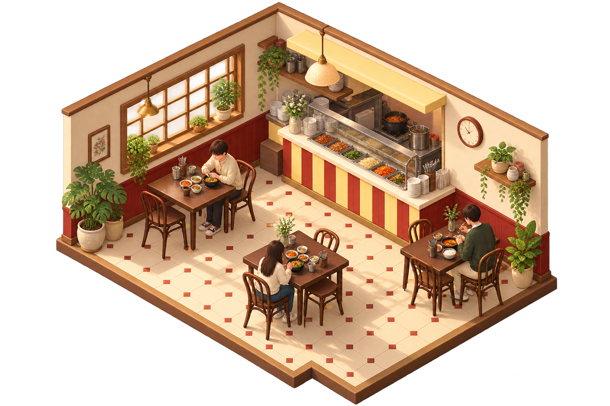

상록원
1 · 2 · 3층
작은 식당 둘러보기
식당 공간 일러스트 · 실제 배치와 다릅니다
01
식당 찾기
건물 위치·외형은 예시입니다.
02
선택한 식당
상록원
점유율·대기시간·발권량은 더미 데이터입니다.
키오스크 발권
최근 5분
—
건
직전 5분
—
최근 5분
—
발권 건수는 현재 대기 인원과 다를 수 있습니다.
2층 학생식당
식사 공간 둘러보기
배치 예시매장별 주문 대기
더미 추정값점유율 추이
2층 학생식당
5분 간격 · 식사 구역 점유율의 평균
혼잡도 제공 준비 중
아직 센서와 연결되지 않았습니다.
공식 메뉴와 시설 정보는 확인할 수 있습니다.
점유율
—
예상 대기
—
03
학교 공식 안내 ↗
상록원 시설 안내
운영시간·좌석 수·이용 대상은 확인 후 안내합니다.